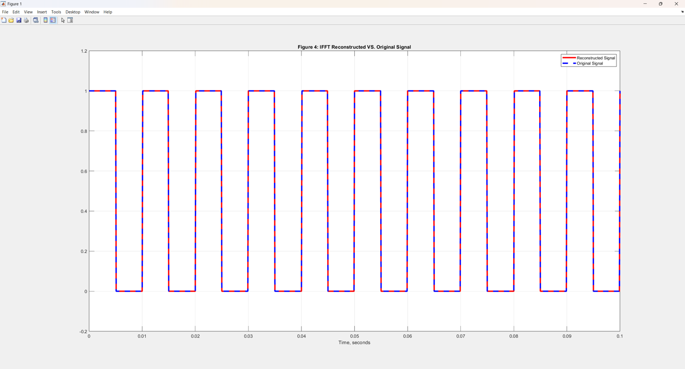
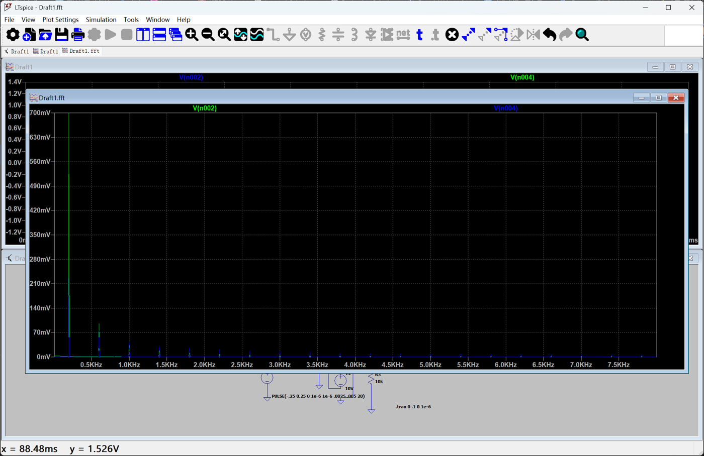

Overview项目概述
Explored discrete Fourier methods and circuit-level spectral behavior for periodic signals. A square wave was decomposed and reconstructed via FFT/IFFT in MATLAB to verify accurate signal recovery, while LTspice transient and FFT analyses characterized the harmonic spectrum of a pulse-driven circuit.探索了周期信号的离散傅里叶方法以及电路层面的频谱行为。在 MATLAB 中通过 FFT/IFFT 对方波进行分解与重建，以验证信号能被准确还原；同时用 LTspice 的瞬态与 FFT 分析刻画了脉冲驱动电路的谐波频谱。
Gallery图库
Click any image to enlarge.点击任意图片可放大。

IFFT-reconstructed signal overlaid on the original 100 Hz square wave, confirming accurate Fourier reconstruction.IFFT 重建信号叠加在原始 100 Hz 方波之上，验证了傅里叶重建的准确性。

LTspice FFT spectrum of a pulse-driven circuit showing the fundamental and decaying harmonic peaks alongside the simulated schematic.脉冲驱动电路的 LTspice FFT 频谱，连同仿真原理图，展示基波及逐渐衰减的谐波峰。